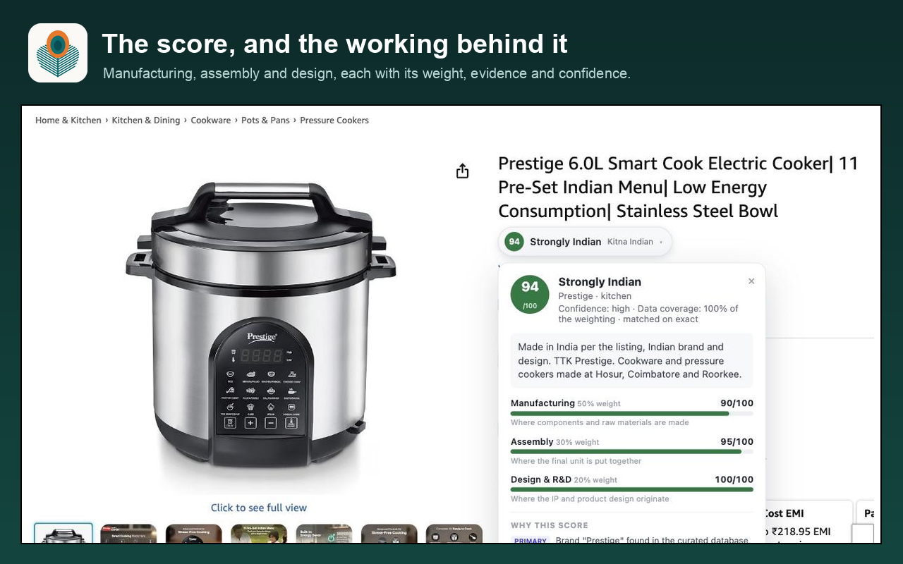
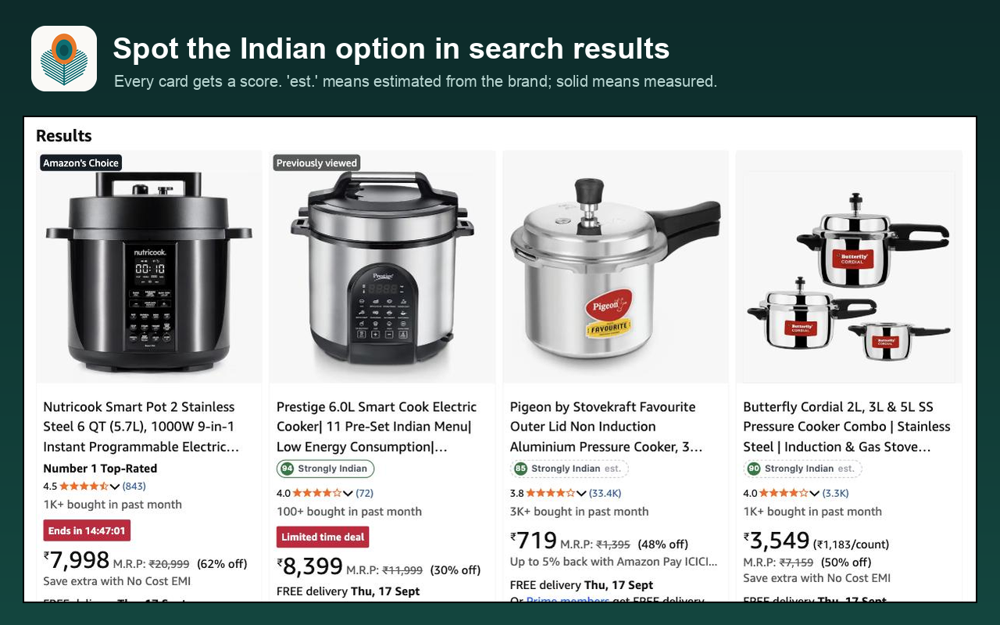

A phone assembled in Tamil Nadu from imported displays and chips is not the same as a pressure cooker forged in Hosur. A yes/no "Made in India" label treats them the same. Kitna Indian doesn't.

How the score works
Manufacturing · 50%
Where the components and raw materials are made.
Assembly · 30%
Where the final product is put together.
Design & R&D · 20%
Where the brand, IP and product design come from.
| Score | Band |
|---|---|
| 80-100 | Strongly Indian |
| 55-79 | Substantially Indian |
| 30-54 | Mixed Origin |
| 0-29 | Largely Foreign |
| no data | Not Enough Data, instead of a made-up number |
Search results too
Every card in a search grid gets a small score, so you can spot the Indian options without opening ten tabs.

Where the numbers come from
Signals are ranked by how far they can be trusted:
- A curated list of 243 brands common in Indian shops, scored per product: palm oil counts against a brand's biscuits, not its toothpaste. Each has figures for every pillar, a written reason, a source link and a confidence level.
- The Country of Origin declared on the listing.
- The manufacturer, packer or importer address. An Indian importer counts against a product, because it means the goods came from abroad.
- The GS1 barcode prefix. A weak signal, only ever used for the design pillar, and the badge says so.
Pillar figures are researched estimates, not certified numbers. If a score looks wrong, use the Report incorrect info button on the badge, or see Support.
Private by design
Four stores only
Runs on amazon.in, flipkart.com, blinkit.com and zepto.com, and nowhere else.
No tracking
No account, no analytics, and no server of its own. Scoring happens in your browser.
No background loading
It never opens product pages behind your back to fill in search results.
Read the full privacy policy.